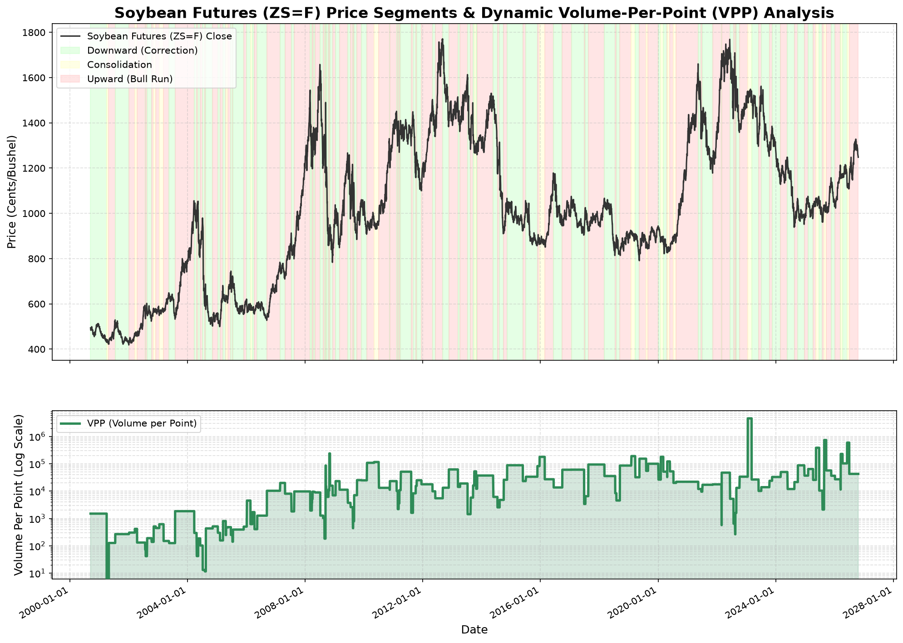

量價效率分析 (VPP)
盤整區高籌碼吸能
盤整段 VPP (391,263 口/點) 為趨勢期約 15-24 倍，籌碼密集沉澱換手。
主波段對稱狀態
上漲主波段持續中
累計漲幅 +11.34% (已持續 77 天)，趨勢仍維持偏多結構。
短線動能預警 (3% 燈號)
短線拉回修正
自 9/16 轉折點 (1332.25) 累計拉回 -5.87%，持續 24 天，密切觀察止跌訊號。
完整模型量化分析摘要
最新執行數據
【ZS=F】【ZS=F】黃豆期貨量價效率與波動對稱動能模型報告 ================================================================================ 【1. 量價效率分析 (Volume-Per-Point, VPP)】 * 上漲波段: 平均移動 1 點需消耗 25,036 口/股之成交量 * 下跌波段: 平均移動 1 點需消耗 15,936 口/股之成交量 * 盤整波段: 平均移動 1 點需消耗 391,263 口/股之成交量 * 💡 學術結論：黃豆期貨盤整期 VPP 為趨勢期之數倍，籌碼高密集蓄能！ -------------------------------------------------------------------------------- 【2. 波動等幅對稱與統計 (上漲趨勢波段)】 * 歷史波段數: 78 次 * 平均幅度: 14.95% (中位數: 9.53%) * 最大幅度: -3.91% | 最小幅度: 93.15% * 平均持續天數: 43.4 天 (中位數: 30 天) -------------------------------------------------------------------------------- 【2. 波動等幅對稱與統計 (下跌修正波段)】 * 歷史波段數: 72 次 * 平均幅度: -11.60% (中位數: -10.93%) * 最大幅度: -39.33% | 最小幅度: 3.96% * 平均持續天數: 37.8 天 (中位數: 28 天) -------------------------------------------------------------------------------- 【3. 當前黃豆期貨波段評估與反彈低點預測】 * 當前波段類型: 上漲 * 波段起始日期: 2026-07-01 * 波段起始價格: 1126.25 * 當前價格 (2026-10-21): 1248.00 * 目前波段累計漲跌: 10.81% * 目前已持續交易日: 78 天 [短線動能預警 (3% 領先燈號)] * 短線波段狀態: 短線拉回下跌 * 短線轉折日期: 2026-09-16 (基準價 1332.25) * 短線累計漲跌: -6.32% * 短線持續天數: 25 天 💡 目前非下跌修正期，無法預估反彈落點。 ================================================================================ 數據分析報表已匯出至: /data/data/com.termux/files/home/storage/downloads/soybean_momentum_backtest.csv 動能效率分析圖 (含 VPP 曲線) 已儲存至: /data/data/com.termux/files/home/storage/downloads/soybean_momentum_analysis.png
最新黃豆期貨量價動能分析圖表
最新更新圖檔
